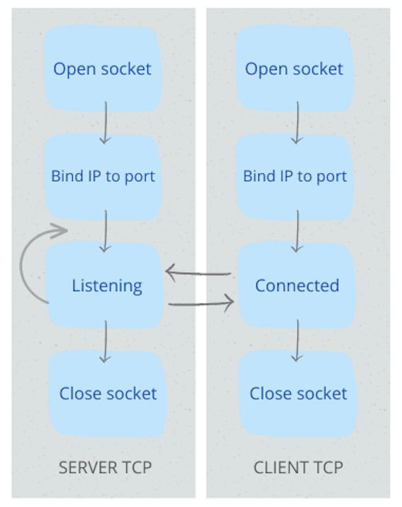

Le socket sono uno degli strumenti fondamentali per la comunicazione tra dispositivi in una rete. In questo sito, esploreremo il loro funzionamento, le tipologie e il processo di comunicazione server-client, oltre a concetti comuni in Informatica e Sistemi e Reti.
Nel sito sono presenti definizioni chiare riguardo le socket, le loro funzionalità, le tipologie e la comunicazione che esse svolgono. Inoltre, viene riportato un esempio di connessione tramite socket attraverso VSCode: i due codici mostrano i due diversi programmi che devono essere compilati per ottenere una connesione di tipo
Le socket non sono tutte uguali, infatti in questo sito scoprirai la differenza tra una Socket Stream e una Socket Datagram, oltre che ad una descrizione dettagliata della comunicazione Serve-Client.
Il modello OSI è fondamentale per la comunicazione, in questo sito conoscerai la composizione della pila ISO/OSI, i suoi livelli e, in particolare, la funzionalità del livello 4 di trasporto.
Due dei protocolli più importanti per la comunicazione sono il TCP e l'UDP, nella pagina relativa troverai le loro descrizioni, le caratteristiche, i ruoli e le principali differenze.
Infine, se qualche concetto non ti risulta chiaro, consulta la pagina dedicata al glossario, troverai le definizioni più ricorrenti nel sito.